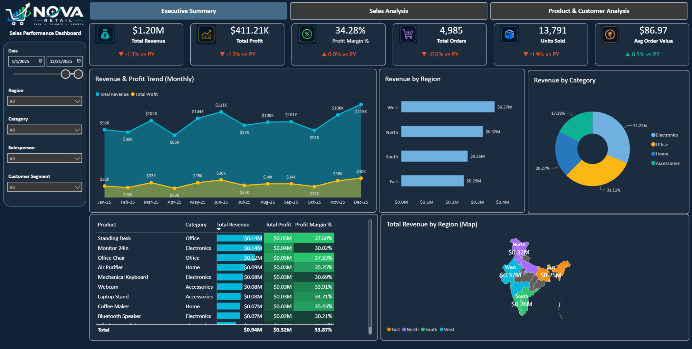
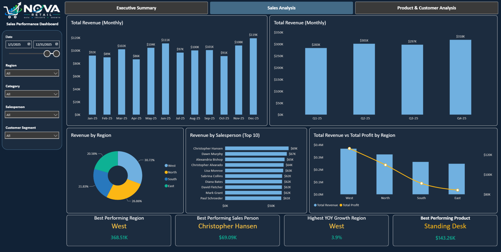
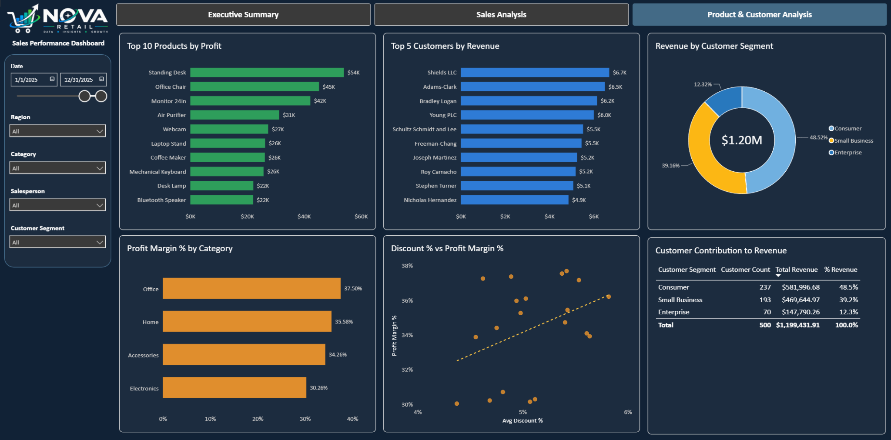

Project overview
The dashboard provides an executive summary together with detailed sales, product and customer analysis. It was designed to replace a repetitive manual consolidation process with a reusable reporting workflow that can incorporate additional monthly sales files and refresh the dashboard efficiently.

Business challenge
Sales data was maintained in separate Excel files for each month. As reporting periods increased, consolidating the files and preparing management reports became more time-consuming and difficult to maintain.
- Repetitive monthly data consolidation
- Difficulty analyzing performance across multiple periods
- Higher risk of manual reporting errors
- Limited interactive analysis for management and sales teams
- Time spent preparing reports instead of interpreting results
Objective
Create an automated reporting solution that consolidates monthly sales data into one analytical dataset, improves consistency and accuracy, and provides management and sales teams with a clear view of performance across products, customers, salespeople, regions and time periods.
Data preparation & model
Power Query is used to combine monthly Excel files, clean and standardize fields, and prepare the reporting dataset. Separate dimension tables support analysis by product, customer, salesperson and other business dimensions, while DAX measures provide the calculations required for KPI and performance reporting.
Sales performance analysis
The sales analysis view provides monthly and quarterly revenue analysis, regional performance, salesperson rankings, revenue versus profit comparisons and high-level indicators such as best-performing region, salesperson and product.

Product & customer analysis
The product and customer view enables deeper analysis of top products, leading customers, customer segments, category margins and the relationship between discount levels and profitability.

Key insights enabled
- Revenue and profit trends by month and quarter
- High-performing products, categories and salespeople
- Regional contribution and performance comparisons
- Revenue contribution by customer and customer segment
- Relationship between discount levels and profit margins
- Areas of strong and weak sales performance
Business value
The solution improves reporting efficiency by reducing repetitive monthly data preparation and gives business users a consistent, interactive reporting environment. The automated workflow helps improve accuracy, shortens report preparation time and makes important trends easier to identify and act on.
Interactive dashboard
The portfolio report is published as an interactive Power BI dashboard using sample/non-confidential data.